Section 6.2 The Circular Functions
Subsection Trigonometric Functions of Angles in Radians
Measuring angles in radians has other applications besides calculating arclength, and we will need to evaluate trigonometric functions of angles in radians. The sine, cosine, or tangent of a particular angle is the same whether the angle is measured in radians or in degrees.
In Section 4.1 we saw that the sine and cosine are related to points on a unit circle.
Angles in a Unit Circle.
Let \(P\) be a point on a unit circle determined by the terminal side of an angle \(\theta\) in standard position. Then the coordinates \((x,y)\) of \(P\) are given by
\begin{equation*}
\blert{x = \cos (\theta),~~~~~~y = \sin (\theta)}
\end{equation*}
This fact follows easily from the definitions of sine and cosine, because on a unit circle \(r=1\text{.}\) In the next Activity we’ll use this relationship to get a feel for the trig values of angles in radians.
Activity 6.2. Trigonometry in Radians.
Here is a unit circle with arclengths labeled, measured counterclockwise from \((1,0)\text{.}\) (Note that the distance around the whole circle is 6.28 units!) In Section 6.1 we learned that on a unit circle, the measure of a positive angle in radians is equal to the length of the arc that it spans.
Use the unit circle to estimate the sine, cosine, and tangent of each angle in radians.
\(\displaystyle 0.6\)
\(\displaystyle 2.3\)
\(\displaystyle 3.5\)
\(\displaystyle 5.3\)
Use the unit circle to estimate two solutions to each equation.
\(\displaystyle \cos (\theta) = 0.3\)
\(\displaystyle \sin (\theta) = 0.7\)
Sketch the angle on the unit circle. Use symmetry to find three more angles with the same sine and cosine, up to sign.
\(\displaystyle 1.8\)
\(\displaystyle 5.2\)
\(\displaystyle 3.7\)
\(\displaystyle 0.3\)
Subsection Using a Calculator
Your calculator can give you the trigonometric function values for angles expressed in radians. For example, \(\dfrac{\pi}{3}\) radians is the same as \(60\degree\text{,}\) because \(\dfrac{\pi}{3} \cdot \dfrac{180\degree}{\pi} = 60\degree\text{,}\) so
\begin{equation*}
\sin \left(\dfrac{\pi}{3}\right) = \sin (60\degree) = \dfrac{\sqrt{3}}{2}
\end{equation*}
However, we don’t have to convert radians to degrees in order to evaluate trig ratios. First, change the calculator setting from Degree mode to Radian mode. Then enter
\begin{equation*}
\sin ~(\pi \div 3)
\end{equation*}
and the calculator will return \(0.8660254038\text{.}\) You can check that this number is a decimal approximation for \(\dfrac{\sqrt{3}}{2}\text{.}\)
Example 6.15.
Use your calculator to find the sine and cosine of the following angles in radians. Round your answers to four decimal places.
\(\displaystyle \theta = \dfrac{7\pi}{4}\)
\(\displaystyle \theta = 3.5\)
Solution.
With the calculator in radian mode, and rounding to four decimal places we find
\begin{align*}
\cos (7\pi/4) \amp = 0.7071\\
\sin (7\pi/4) \amp = -0.7071
\end{align*}
Your calculator will also give you the values
\begin{align*}
\cos (3.5) \amp = -0.9365\\
\sin (3.5) \amp = -0.3508
\end{align*}
rounded to four places. Note that 3.5 radians is a third-quadrant angle, so the signs of the trig values make sense.
Checkpoint 6.16.
Use your calculator to find the tangents of the following angles in radians. Round your answers to four decimal places.
\(\displaystyle \theta = \dfrac{5\pi}{12}\)
\(\displaystyle \theta = 5.2\)
Answer.
\(\displaystyle 3.7321\)
\(\displaystyle -1.8856\)
If two angles are coterminal they have the same trig values, just as they do when measured in degrees. So adding or subtracting a multiple of \(2 \pi\) to any angle results in a new angle in the same standard position and with the same trig values.
Example 6.17.
Find the sine and cosine of the following angles in radians. Round your answers to four decimal places.
\(\displaystyle \theta = \dfrac{5\pi}{2}\)
\(\displaystyle \theta = - 4\)
Solution.
Because \(\dfrac{5\pi}{2} = 2\pi + \dfrac{\pi}{2},~\) \(\theta\) is coterminal with \(\dfrac{\pi}{2},~\) and it has the same sine and cosine as \(\dfrac{\pi}{2}\text{.}\) And \(\dfrac{\pi}{2}\) radians is equal to \(90\degree\text{,}\) so
\begin{gather*}
\sin (\theta) = \sin \left(\dfrac{\pi}{2}\right) = 1\\
\cos (\theta) = \cos \left(\dfrac{\pi}{2}\right) = 0
\end{gather*}
Rounded to four places, your calculator will give you the values
\begin{align*}
\cos (-4) \amp = -0.6536\\
\sin (-4) \amp = 0.7568
\end{align*}
By adding 6.2832 (that’s approximately \(2\pi\)) to \(-4\) we see that \(-4\) radians is coterminal with \(2.2832\) radians, a second-quadrant angle. You can check that \(2.2832\) radians has (approximately) the same trig values as \(-4\) radians.
Checkpoint 6.18.
Use your calculator to find the tangent of the following angles in radians. Round your answers to four decimal places.
\(\displaystyle \theta = -\dfrac{3\pi}{4}\)
\(\displaystyle \theta = 15\)
Answer.
\(\displaystyle 1\)
\(\displaystyle -0.8560\)
Recall the formula for arclength when the angle is measured in radians: \(s = r \theta\text{.}\) If we solve for \(\theta\text{,}\) we see that \(\theta = \dfrac{s}{r}\text{,}\) a ratio of two lengths. The units of length cancel out, so that radian measure has no units; it is a "dimensionless" quantity. In other words, a radian measure is just a real number.
We shall see that this property makes radians especially useful in applications. From now on we shall omit the tag "radians," and you may assume that any angle given without units is in radians.
Subsection Sine and Cosine of Real Numbers
We have observed that the measure of an angle in radians is just a real number. This is an important observation, because it allows us to define the sine and cosine as functions of real numbers, instead of as functions of angles.
Sine and Cosine of Real Numbers.
We define the trigonometric functions of the real number \(t\) by
\begin{equation*}
\blert{\cos (t) = \cos (\theta)} ~~~~\text{and} ~~~~ \blert{\sin (t) = \sin (\theta)}
\end{equation*}
where \(\theta = t~\) is an angle measured in radians.
We can think of the definition this way: to find the sine or cosine of a real number \(t\text{,}\) we find the sine or cosine of the angle \(\theta = t\) in radians.
So, in some sense then, a trig function of a radian is the same as a trig function of a real number. This result is so important that it bears repeating: to find the sine or cosine of a real number \(t\text{,}\) we find the sine or cosine of the angle \(t\) radians. We can now use the trigonometric functions to model periodic behavior as functions of time, or indeed, of any variable.
Example 6.20.
The sunset time in Stockholm, Sweden, on the \(n\)th day of the year can be modeled by
\begin{equation*}
T = 3.11 ~\sin ~(0.017n - 1.38) + 6.03
\end{equation*}
where \(T\) is given in hours after noon. Find the sunset time on January 1 (day \(n = 1\)) and on July 1 (day \(n = 182\)).
Solution.
Evaluate the function for \(n = \alert{1}\) to find
\begin{equation*}
T = 3.11 ~\sin ~(0.017(\alert{1}) - 1.38) + 6.03 = 2.99
\end{equation*}
On January 1, sunset in Stockholm occurs about 2.99 hours after noon, or at 2:59 pm.
Evaluate the function at \(n = \alert{182}\) to find
\begin{equation*}
T = 3.11 ~\sin ~(0.017(\alert{182}) - 1.38) + 6.03 = 9.11
\end{equation*}
On July 1, sunset occurs about 9.11 hours after noon, or at 9:07 pm. (Actually, 10:07 pm, because of daylight savings time.)
Checkpoint 6.21.
Variable stars are important in astronomy because they are used to estimate distances. Their magnitude, or brightness, varies periodically and can be modeled by trigonometric functions. The star T Herculis reached its minimum magnitude on December 27, 2004, and \(t\) days later its magnitude is approximately
\begin{equation*}
M = 10.2 - 2.2 ~\cos~(0.038t)
\end{equation*}
What was the magnitude of T Herculis on December 27, 2004?
What was the magnitude of T Herculis be on December 27, 2006 (730 days later)?
Answer.
\(\displaystyle 8\)
\(\displaystyle 12.09\)
Subsection The Tangent Function
We can also define the tangent function for real numbers. Let \(P(x,y)\) be the terminal point of an arc of length \(t\) in standard position on a unit circle. Then
\begin{equation*}
\blert{\tan (t) = \dfrac{y}{x}}
\end{equation*}
Of course, this definition agrees with our earlier definition of the tangent function for angles, because the point \(P\) lies on the terminal side of the angle \(\theta = t\) radians.
For example, we saw earlier that, rounded to four decimal places,
\begin{equation*}
\cos (2) = -0.4161~~~~\text{and} ~~~~ \sin (2) = 0.9093
\end{equation*}
so the coordinates of point \(P\) on the unit circle in the figure at right are \((-0.4161, 0.9093)\text{.}\) Therefore,
\begin{equation*}
\tan (2) = \dfrac{0.9093}{-0.4161} = -2.1853
\end{equation*}
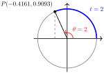
You can set your calculator in radian mode to verify that, to three decimal places,
\begin{equation*}
\tan (2) = -2.185
\end{equation*}
Because the trig values can be found as coordinates on a unit circle, our three trig functions are often called the circular functions. We now have the following definitions for the circular functions of real numbers.
The Circular Functions.
Let \(P\) be the terminal point of an arc of length \(t\) in standard position on a unit circle. The circular functions of \(t\) are defined by
\begin{align*}
\blert{\cos (t)~} \amp \blert{= x}\\
\blert{\sin (t)~} \amp \blert{= y}\\
\blert{\tan (t)~} \amp \blert{= \dfrac{y}{x},~~~~x \not= 0}
\end{align*}
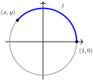
Example 6.22.
Use the graph of the unit circle shown below to estimate \(\cos (2.5),~\sin (2.5)\text{,}\) and \(\tan (2.5)\text{.}\)
Solution.
The circle is scaled in units of 0.1 radians, and an arc of 2.5 radians in standard position has its terminal point, \(P\text{,}\) in the second quadrant. The coordinates of \(P\) are approximately \((-0.8,0.6)\text{,}\) so we have
\begin{equation*}
\cos (2.5) = -0.8~~~~\text{and}~~~~\sin (2.5) = 0.6
\end{equation*}
To find \(\tan (2.5)\text{,}\) we calculate \(\dfrac{y}{x}\text{.}\)
\begin{equation*}
\tan (2.5) = \dfrac{y}{x} = \dfrac{0.6}{-0.8} = -0.75
\end{equation*}
Checkpoint 6.23.
Use the graph of the unit circle in the previous example to estimate \(\cos (4.2),~ \sin (9)\text{,}\) and \(\tan (4.2)\text{.}\)
Answer.
\(-0.49\text{,}\) \(~{-0.87}\text{,}\) \(~1.78\)
Subsection The Special Values
In Chapter 2 you learned the exact trig values for the "special angles" \(30 \degree,~ 45 \degree\) and \(60 \degree\text{.}\) Recall that the trig values for these angles can be used as benchmarks for estimating and mental calculation. Now we review those values when the angles are measured in radians.
The easiest way to remember the special values is to refer to the sides of the two special triangles:
| Degrees |
Radians |
Sine |
Cosine |
Tangent |
| \(0\degree\) |
\(0\) |
\(0\) |
\(1\) |
\(0\) |
| \(30\degree\) |
\(\dfrac{\pi}{6}\) |
\(\dfrac{1}{2}\) |
\(\dfrac{\sqrt{3}}{2}\) |
\(\dfrac{1}{\sqrt{3}}\) |
| \(45\degree\) |
\(\dfrac{\pi}{4}\) |
\(\dfrac{1}{\sqrt{2}}\) |
\(\dfrac{1}{\sqrt{2}}\) |
\(1\) |
| \(60\degree\) |
\(\dfrac{\pi}{3}\) |
\(\dfrac{\sqrt{3}}{2}\) |
\(\dfrac{1}{2}\) |
\(\sqrt{3}\) |
| \(90\degree\) |
\(\dfrac{\pi}{2}\) |
\(1\) |
\(0\) |
undefined |
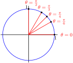
You can use these values to find trig values for the special angles in all four quadrants.
Recall that we use reference angles to define the trigonometric ratios for angles greater than \(90\degree\text{.}\) (See Section 4.1 to review reference angles.) The figure below shows how to calculate reference angles in radians. Note that the formulas are the same as those for degrees if we replace \(180\degree\) by \(\pi\text{!}\)
Reference Angles in Radians.
Example 6.24.
Give exact values for the following.
\(\displaystyle \tan \left(\dfrac{2\pi}{3}\right)\)
\(\displaystyle \cos \left(\dfrac{5\pi}{4}\right)\)
Solution.
The reference angle for \(\dfrac{2\pi}{3}\) is \(\pi - \dfrac{2\pi}{3} = \dfrac{\pi}{3}\text{,}\) and the tangent is negative in the second quadrant. (See the figure at right.) Thus,
\begin{equation*}
\tan \left(\dfrac{2\pi}{3}\right) = -\tan \left(\dfrac{\pi}{3}\right) = -\sqrt{3}
\end{equation*}
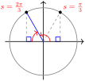
The reference angle for \(\dfrac{5\pi}{4}\) is \(\dfrac{5\pi}{4} - \pi = \dfrac{\pi}{4}\text{,}\) and the cosine is negative in the third quadrant, so
\begin{equation*}
\cos \left(\dfrac{5\pi}{4}\right) = - \cos \left(\dfrac{\pi}{4}\right) = \dfrac{-1}{\sqrt{2}}
\end{equation*}
Checkpoint 6.26.
Give exact values for the following.
\(\displaystyle \sin \left(\dfrac{5\pi}{6}\right)\)
\(\displaystyle \tan \left(\dfrac{7\pi}{4}\right)\)
Answer.
\(\displaystyle \dfrac{1}{2}\)
\(\displaystyle -1\)
Activity 6.3. Special Angles in Radians.
Here is a unit circle with arclengths labeled, measured counterclockwise from \((1,0)\text{.}\)
-
Give a decimal approximation to two places for each angle, then the degree measure of each.
| Radians |
\(0\) |
\(\dfrac{\pi}{6}\) |
\(\dfrac{\pi}{4}\) |
\(\dfrac{\pi}{3}\) |
\(\dfrac{\pi}{2}\) |
\(\dfrac{2\pi}{3}\) |
\(\dfrac{3\pi}{4}\) |
\(\dfrac{5\pi}{6}\) |
\(\pi\) |
Decimal
Approx. |
\(\hphantom{000}\) |
\(\hphantom{000}\) |
\(\hphantom{000}\) |
\(\hphantom{000}\) |
\(\hphantom{000}\) |
\(\hphantom{000}\) |
\(\hphantom{000}\) |
\(\hphantom{000}\) |
\(\hphantom{000}\) |
| Degrees |
\(\hphantom{000}\) |
\(\hphantom{000}\) |
\(\hphantom{000}\) |
\(\hphantom{000}\) |
\(\hphantom{000}\) |
\(\hphantom{000}\) |
\(\hphantom{000}\) |
\(\hphantom{000}\) |
\(\hphantom{000}\) |
| Radians |
\(\pi\) |
\(\dfrac{7\pi}{6}\) |
\(\dfrac{5\pi}{4}\) |
\(\dfrac{4\pi}{3}\) |
\(\dfrac{3\pi}{2}\) |
\(\dfrac{5\pi}{3}\) |
\(\dfrac{7\pi}{4}\) |
\(\dfrac{11\pi}{6}\) |
\(2\pi\) |
Decimal
Approx. |
\(\hphantom{000}\) |
\(\hphantom{00}\) |
\(\hphantom{00}\) |
\(\hphantom{00}\) |
\(\hphantom{00}\) |
\(\hphantom{00}\) |
\(\hphantom{00}\) |
\(\hphantom{00}\) |
\(\hphantom{000}\) |
| Degrees |
\(\hphantom{00}\) |
\(\hphantom{00}\) |
\(\hphantom{00}\) |
\(\hphantom{00}\) |
\(\hphantom{00}\) |
\(\hphantom{00}\) |
\(\hphantom{00}\) |
\(\hphantom{00}\) |
\(\hphantom{00}\) |
On the unit circle above, plot the endpoint of each arc in standard position.
\(\displaystyle \dfrac{\pi}{3}\)
\(\displaystyle \dfrac{7\pi}{6}\)
\(\displaystyle \dfrac{7\pi}{4}\)
Use the unit circle to estimate the sine, cosine and tangent for each angle in part (2). Then compare your estimate with the exact trig value.
Example 6.27.
Find the coordinates of the terminal point, \(P\text{,}\) of an arc of length \(t = \dfrac{5\pi}{6}\) starting at \((1,0)\) on a unit circle.
Solution.
The coordinates of \(P\) are \(\left(\cos \dfrac{5\pi}{6}, \sin \dfrac{5\pi}{6}\right)\text{,}\) so
\begin{align*}
x \amp= \cos \left(\dfrac{5\pi}{6}\right) = \dfrac{-\sqrt{3}}{2}~~~\\
y \amp= \sin \left(\dfrac{5\pi}{6}\right) = \dfrac{1}{2}
\end{align*}
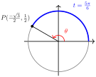
Thus, the coordinates of \(P\) are \(\left(\dfrac{-\sqrt{3}}{2},\dfrac{1}{2}\right)\text{,}\) as shown at right.
Checkpoint 6.28.
Find the coordinates of the terminal point, \(P\text{,}\) of an arc of length \(t = \dfrac{\pi}{3}\) starting at \((1,0)\) on a unit circle.
Answer.\(\left(\dfrac{1}{2},\dfrac{\sqrt{3}}{2}\right)\)
Review the following skills you will need for this section.
Algebra Refresher 6.4.
\(\displaystyle \dfrac{2}{3} + \dfrac{1}{6}\)
\(\displaystyle \dfrac{2x}{3} + \dfrac{x}{6}\)
\(\displaystyle \dfrac{3}{4} - \dfrac{5}{8}\)
\(\displaystyle \dfrac{3n}{4} - \dfrac{5n}{8}\)
\(\displaystyle 2 - \dfrac{3}{4}\)
\(\displaystyle 2b - \dfrac{3b}{4}\)
\(\displaystyle 1 + \dfrac{3}{8}\)
\(\displaystyle m + \dfrac{3m}{8}\)
\(\displaystyle \dfrac{5}{6} - \dfrac{7}{6}\)
\(\displaystyle \dfrac{5q}{6} - \dfrac{7q}{6}\)
\(\displaystyle \dfrac{2}{3} - \dfrac{5}{3}\)
\(\displaystyle \dfrac{2p}{3} - \dfrac{5p}{3}\)
\(\underline{\qquad\qquad\qquad\qquad}\)
Algebra Refresher Answers
\(\displaystyle \dfrac{5}{6}\)
\(\displaystyle \dfrac{5x}{6}\)
\(\displaystyle \dfrac{1}{8}\)
\(\displaystyle \dfrac{n}{8}\)
\(\displaystyle \dfrac{5}{4}\)
\(\displaystyle \dfrac{5b}{4}\)
\(\displaystyle \dfrac{11}{8}\)
\(\displaystyle \dfrac{11m}{8}\)
\(\displaystyle \dfrac{-1}{6}\)
\(\displaystyle \dfrac{-q}{6}\)
\(\displaystyle -1\)
\(\displaystyle -p\)
Subsection Section 6.2 Summary
Subsubsection Concepts
The sine, cosine, or tangent of a particular angle is the same whether the angle is measured in radians or in degrees.
-
You should memorize the trig values of the special angles in radians.
| Degrees |
Radians |
Sine |
Cosine |
Tangent |
| \(0\degree\) |
\(0\) |
\(0\) |
\(1\) |
\(0\) |
| \(30\degree\) |
\(\dfrac{\pi}{6}\) |
\(\dfrac{1}{2}\) |
\(\dfrac{\sqrt{3}}{2}\) |
\(\dfrac{1}{\sqrt{3}}\) |
| \(45\degree\) |
\(\dfrac{\pi}{4}\) |
\(\dfrac{1}{\sqrt{2}}\) |
\(\dfrac{1}{\sqrt{2}}\) |
\(1\) |
| \(60\degree\) |
\(\dfrac{\pi}{3}\) |
\(\dfrac{\sqrt{3}}{2}\) |
\(\dfrac{1}{2}\) |
\(\sqrt{3}\) |
| \(90\degree\) |
\(\dfrac{\pi}{2}\) |
\(1\) |
\(0\) |
undefined |
To find the sine or cosine of a real number \(t\text{,}\) we find the sine or cosine of the angle \(\theta = t\) in radians.
Coordinates on a Unit Circle.
The coordinates of the point \(P\) determined by an arc of length \(t\) in standard position on a unit circle are
\begin{equation*}
(x, y) = \left(\cos (t), \sin (t)\right)
\end{equation*}
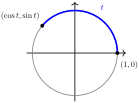
The Circular Functions.
Let \(P\) be the terminal point of an arc of length \(t\) in standard position on a unit circle. The circular functions of \(t\) are defined by
\begin{equation*}
\begin{aligned}[t]
\cos (t) \amp = x\\
\sin (t) \amp = y\\
\tan (t) \amp = \dfrac{y}{x},~~x \not= 0\\
\end{aligned}
\end{equation*}
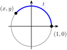
Subsubsection Study Questions
-
Write each statement using decimal approximations to four places.
\(\displaystyle \cos \left(\dfrac{\pi}{6}\right) = \dfrac{\sqrt{3}}{2}\)
\(\displaystyle \sin \left(\dfrac{5\pi}{4}\right) = \dfrac{-1}{\sqrt{2}}\)
-
Sketch a figure on a unit circle to illustrate each equation.
\(\displaystyle \sin \left(\dfrac{3\pi}{4}\right) = 0.7071\)
\(\displaystyle \cos (2.5) = -0.8011\)
Write down the multiples of \(\dfrac{\pi}{12}\) from \(0\) to \(2\pi\text{.}\) Reduce each fraction.
On a unit circle, sketch arcs in standard position with the following lengths.
\begin{equation*}
s = \dfrac{\pi}{2},~s = \dfrac{3\pi}{4},~s = \dfrac{\pi}{3},~s = \dfrac{2\pi}{3}
\end{equation*}
Subsubsection Skills
Know the trigonometric function values for the special angles in radians #1–4, 46–48
Use a unit circle to find trig values #5–30, 45–58
Find reference angles in radians #33–45
Evaluate trigonometric expressions #31–32, 49–54
Find coordinates on a unit circle #55–60, 67–68
Find an angle with a given terminal point on a unit circle #61–66
Use the tangent ratio to find slope #69–74
Find coordinates on a circle of radius #77–80
Exercises Homework 6.2
Exercise Group.
For Problems 1–4, each point on the unit circle is the terminal point of an angle in standard position. Give exact values for the radian measure, \(t\text{,}\) of the angle, and the coordinates \((x,y)\) of the point.
1.
| \(\hphantom{0000}\) |
a |
b |
c |
d |
| \(t\) |
\(\hphantom{0000}\) |
\(\hphantom{0000}\) |
\(\hphantom{0000}\) |
\(\hphantom{0000}\) |
| \(x\) |
\(\hphantom{0000}\) |
\(\hphantom{0000}\) |
\(\hphantom{0000}\) |
\(\hphantom{0000}\) |
| \(y\) |
\(\hphantom{0000}\) |
\(\hphantom{0000}\) |
\(\hphantom{0000}\) |
\(\hphantom{0000}\) |
2.
| \(\hphantom{0000}\) |
a |
b |
c |
d |
| \(t\) |
\(\hphantom{0000}\) |
\(\hphantom{0000}\) |
\(\hphantom{0000}\) |
\(\hphantom{0000}\) |
| \(x\) |
\(\hphantom{0000}\) |
\(\hphantom{0000}\) |
\(\hphantom{0000}\) |
\(\hphantom{0000}\) |
| \(y\) |
\(\hphantom{0000}\) |
\(\hphantom{0000}\) |
\(\hphantom{0000}\) |
\(\hphantom{0000}\) |
3.
| \(\hphantom{0000}\) |
a |
b |
c |
d |
| \(t\) |
\(\hphantom{0000}\) |
\(\hphantom{0000}\) |
\(\hphantom{0000}\) |
\(\hphantom{0000}\) |
| \(x\) |
\(\hphantom{0000}\) |
\(\hphantom{0000}\) |
\(\hphantom{0000}\) |
\(\hphantom{0000}\) |
| \(y\) |
\(\hphantom{0000}\) |
\(\hphantom{0000}\) |
\(\hphantom{0000}\) |
\(\hphantom{0000}\) |
4.
| \(\hphantom{0000}\) |
a |
b |
c |
d |
| \(t\) |
\(\hphantom{0000}\) |
\(\hphantom{0000}\) |
\(\hphantom{0000}\) |
\(\hphantom{0000}\) |
| \(x\) |
\(\hphantom{0000}\) |
\(\hphantom{0000}\) |
\(\hphantom{0000}\) |
\(\hphantom{0000}\) |
| \(y\) |
\(\hphantom{0000}\) |
\(\hphantom{0000}\) |
\(\hphantom{0000}\) |
\(\hphantom{0000}\) |
Exercise Group.
For Problems 5–8, use the unit circle to estimate the sine, cosine, and tangent of each arc of given length.
5.
\(\displaystyle 0.4\)
\(\displaystyle 1.2\)
\(\displaystyle 2\)
6.
\(\displaystyle 0.8\)
\(\displaystyle 2.6\)
\(\displaystyle 4\)
7.
\(\displaystyle 2.8\)
\(\displaystyle 3.5\)
\(\displaystyle 5\)
8.
\(\displaystyle 3\)
\(\displaystyle 4.3\)
\(\displaystyle 5.5\)
Exercise Group.
For Problems 9–14, use the unit circle to estimate two numbers with the given trig value.
9.
\(\cos (t) = 0.3\)
10.
\(\sin (t) = 0.1\)
11.
\(\sin (t) = -0.7\)
12.
\(\cos (t) = -0.6\)
13.
\(\tan (t) = \dfrac{-4}{9}\)
14.
\(\tan (t) = \dfrac{8}{6}\)
Exercise Group.
Each of Problems 13–20 describes an arc in standard position on the unit circle. In which quadrant does the terminal point of the arc lie?
15.
\(\sin (s) \gt 0,~ \cos (s) \lt 0\)
16.
\(\sin (s) \lt 0,~ \cos (s) \gt 0\)
17.
\(\cos (t) \lt 0,~ \tan (t) \lt 0\)
18.
\(\cos (t) \gt 0,~ \tan (t) \lt 0\)
19.
\(\sin (x) \lt 0,~ \tan (x) \gt 0\)
20.
\(\sin (x) \gt 0,~ \tan (x) \lt 0\)
Exercise Group.
For Problems 21–26, without using a calculator, decide whether the quantity is positive or negative.
21.
\(\cos (2.7)\)
22.
\(\sin (4.1)\)
23.
\(\tan (3.8)\)
24.
\(\tan (5.4)\)
25.
\(\sin (2.2)\)
26.
\(\cos (4.9)\)
Exercise Group.
For Problems 27–30, place the trig values in order from smallest to largest. Use the figure to help you, but try not to use a calculator!
27.
\(\sin (0.5)\text{,}\) \(\sin (1.5)\text{,}\) \(\sin (2.5)\text{,}\) \(\sin (3.5)\)
28.
\(\cos (1.6)\text{,}\) \(\cos (2.6)\text{,}\) \(\cos (3.6)\text{,}\) \(\cos (5.6)\)
29.
\(\cos (2)\text{,}\) \(\cos (3)\text{,}\) \(\cos (4)\text{,}\) \(\cos (5)\)
30.
\(\sin (2.8)\text{,}\) \(\sin (3.8)\text{,}\) \(\sin (4.8)\text{,}\) \(\sin (5.8)\)
31.
The sunrise time in Wellington, New Zealand, on the \(n\)th day of the year can be modeled by
\begin{equation*}
S = 1.93 ~\sin ~(0.016n - 1.13) + 6.14
\end{equation*}
where \(S\) is given in hours after midnight. Find the sunrise time on January 1 (day \(n = 1\)), April 1 (day \(n = 91\)), July 1 (day \(n = 182\)), and on October 1 (day \(n = 274\)).
32.
The variable star RT Cygni reached its maximum magnitude on May 22, 2004, and \(t\) days later its magnitude is given by
\begin{equation*}
M = 9.55 - 2.25 ~\cos ~(0.033t)
\end{equation*}
Find the magnitude of RT Cygni on days \(t = 0,~ t = 48,~ t = 95,~ t = 142,\) and \(t = 190\text{.}\) (Note that smaller values of \(M\) denote brighter magnitudes.)
Exercise Group.
For Problems 33–38, find the reference angle in radians, rounded to two decimal places.
33.
\(1.8\)
34.
\(4.9\)
35.
\(-2.3\)
36.
\(-6.0\)
37.
\(9.4\)
38.
\(7.1\)
Exercise Group.
For Problems 39–44, find the reference angle in radians, expressed as a multiple of \(\pi\text{.}\)
39.
\(\dfrac{11\pi}{12}\)
40.
\(\dfrac{11\pi}{8}\)
41.
\(\dfrac{4\pi}{3}\)
42.
\(\dfrac{7\pi}{6}\)
43.
\(\dfrac{13\pi}{4}\)
44.
\(\dfrac{8\pi}{3}\)
45.
Find three angles in radians between \(0\) and \(2\pi\) with the given reference angle. Sketch all the angles on a unit circle.
\(\displaystyle \dfrac{\pi}{6}\)
\(\displaystyle \dfrac{\pi}{4}\)
\(\displaystyle \dfrac{\pi}{3}\)
46.
Complete the table.
| \(~\theta~\) |
\(~~~\sin (\theta)~~~\) |
\(~~~\cos (\theta)~~~\) |
\(~~~\tan (\theta)~~~\) |
| \(\dfrac{2\pi}{3}\) |
\(\hphantom{0000}\) |
\(\hphantom{0000}\) |
\(\hphantom{0000}\) |
| \(\dfrac{3\pi}{4}\) |
\(\hphantom{0000}\) |
\(\hphantom{0000}\) |
\(\hphantom{0000}\) |
| \(\dfrac{5\pi}{6}\) |
\(\hphantom{0000}\) |
\(\hphantom{0000}\) |
\(\hphantom{0000}\) |
47.
Complete the table.
| \(~\theta~\) |
\(~~~\sin (\theta)~~~\) |
\(~~~\cos (\theta)~~~\) |
\(~~~\tan (\theta)~~~\) |
| \(\dfrac{7\pi}{6}\) |
\(\hphantom{0000}\) |
\(\hphantom{0000}\) |
\(\hphantom{0000}\) |
| \(\dfrac{5\pi}{4}\) |
\(\hphantom{0000}\) |
\(\hphantom{0000}\) |
\(\hphantom{0000}\) |
| \(\dfrac{4\pi}{3}\) |
\(\hphantom{0000}\) |
\(\hphantom{0000}\) |
\(\hphantom{0000}\) |
48.
Complete the table.
| \(~\theta~\) |
\(~~~\sin (\theta)~~~\) |
\(~~~\cos (\theta)~~~\) |
\(~~~\tan (\theta)~~~\) |
| \(\dfrac{5\pi}{3}\) |
\(\hphantom{0000}\) |
\(\hphantom{0000}\) |
\(\hphantom{0000}\) |
| \(\dfrac{7\pi}{4}\) |
\(\hphantom{0000}\) |
\(\hphantom{0000}\) |
\(\hphantom{0000}\) |
| \(\dfrac{11\pi}{6}\) |
\(\hphantom{0000}\) |
\(\hphantom{0000}\) |
\(\hphantom{0000}\) |
Exercise Group.
For Problems 49–54, evaluate the expression exactly.
49.
\(\cos \left(\dfrac{\pi}{3}\right) \sin \left(\dfrac{\pi}{6}\right)\)
50.
\(\sin \left(\dfrac{\pi}{4}\right) \tan \left(\dfrac{\pi}{3}\right)\)
51.
\(\tan \left(\dfrac{5\pi}{6}\right) + \tan \left(\dfrac{7\pi}{4}\right)\)
52.
\(\cos \left(\dfrac{3\pi}{4}\right) - \cos \left(\dfrac{5\pi}{3}\right)\)
53.
\(\cos^2 \left(\dfrac{11\pi}{6}\right) - 3\cos \left(\dfrac{11\pi}{6}\right)\)
54.
\(2\sin \left(\dfrac{4\pi}{3}\right) - \sin^2 \left(\dfrac{4\pi}{3}\right)\)
Exercise Group.
Starting at \((1,0)\text{,}\) you walk \(s\) units around a unit circle. For Problems 55–58, sketch a unit circle showing your position. What are your coordinates?
55.
\(s = 2.5\)
56.
\(s = 4.3\)
57.
\(s = 8.5\)
58.
\(s = 11\)
59.
City Park features a circular jogging track of radius 1 mile, centered on the open-air bandstand. You start jogging on the track 1 mile due east of the bandstand and proceed counterclockwise. What are your coordinates, relative to the bandstand, when you have jogged five miles?
60.
Silver Reservoir is a circular man-made lake of radius 1 kilometer. If you start at the easternmost point on the reservoir and walk counterclockwise for 4 kilometers, how far south of your intial position are you?
Exercise Group.
For Problems 61–66, find the angle in radians between \(0\) and \(2\pi\) determined by the terminal point on the unit circle. Round your answer to hundredths.
61.
\((-0.1782, 0.9840)\)
62.
\((-0.8968, -0.4425)\)
63.
\((0.8855, -0.4646)\)
64.
\((0.9801, 0.1987)\)
65.
\((-0.7659, -0.6430)\)
66.
\((0.9602, -0.2794)\)
67.
Sketch a unit circle and the line \(y = x\text{.}\) Find the coordinates of the two points where the line and the circle intersect.
State your answers to part (a) using trigonometric functions.
68.
Sketch a unit circle and the line \(y = -x\text{.}\) Find the coordinates of the two points where the line and the circle intersect.
State your answers to part (a) using trigonometric functions.
69.
Sketch a line that passes through the origin and the point \((8,3)\text{.}\) What is the slope of the line?
What is the angle of inclination of the line in radians, measured from the positive \(x\)-axis?
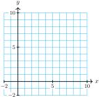
70.
Sketch a line that passes through the origin and the point \((3,8)\text{.}\) What is the slope of the line?
What is the angle of inclination of the line in radians, measured from the positive \(x\)-axis?
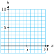
Exercise Group.
For Problems 71–74, find an equation for the line with the given angle of inclination, passing through the given point. (See Section 4.3 to review angle of inclination.)
71.
\(\alpha = \dfrac{\pi}{3},~ (4,2)\)
72.
\(\alpha = \dfrac{5\pi}{6},~ (-6,3)\)
73.
\(\alpha = 2.4,~ (5,-8)\)
74.
\(\alpha = 0.6,~ (-2,-3)\)
75.
Use similar triangles to show that the coordinates of point \(P\) on the unit circle shown at right are \((\cos (t), \sin (t))\text{.}\)
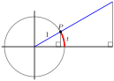
76.
Use similar triangles to show that \(ST = \tan (t)\text{.}\)
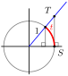
Exercise Group.
Use the results of Problem 77 for for Problems 78–80.
77.
Use similar triangles to show that the coordinates of a point \(P\) determined by angle \(\theta\) on a circle of radius \(r\) are \(x = r \cos (\theta),~ y = r\sin (\theta)\text{.}\) (See the figure at right.)
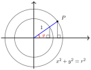
78.
The Astrodome in Houston has a diameter of 710 feet. If you start at the easternmost point and walk counterclockwise around its perimeter for a distance of 250 feet, how far north of your starting point are you?
79.
The Barringer meteor crater near Winslow, Arizona is 1182 meters in diameter. You start at the easternmost point on the rim of the crater and walk counterclockwise around the edge. After walking for 1 kilometer, what is your position relative to your starting point
80.
One of the most intriguing features of Stonehenge is the position of the four Station Stones.
They form the corners of a rectangle inscribed in the Aubrey Circle on the perimeter of the henge, which has diameter 288 feet. A line from the center of the circle and perpendicular to the long edge of the rectangle points through the Slaughter Stones at the entrance of the henge and out to the Heel Stone. If you stood in the center of the circle on the summer solstice, you would see the sun rise directly over the Heel Stone.
The sun rises \(48.6\degree\) east of north on the summer solstice at Stonehenge. If the positive \(y\)-axis points north, find the coordinates of the henge entrance relative to its center.
The northernmost station stone is located \(66.6\degree\) of arc counterclockwise from the entrance. Find its coordinates relative to the center of the henge.